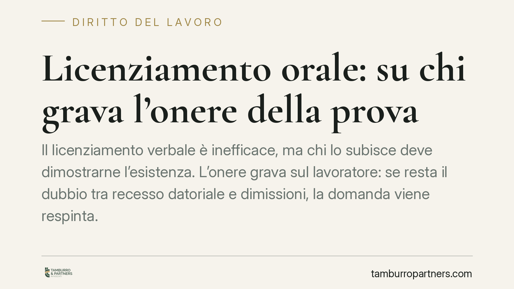

Licenziamento orale: su chi grava l'onere della prova
Il licenziamento verbale è inefficace, ma chi lo subisce deve dimostrarne l'esistenza. L'onere grava sul lavoratore: se resta il dubbio tra recesso datoriale e dimissioni, la domanda viene respinta. Vediamo cosa dice la normativa, perché la prova è il vero nodo della controversia e quali cautele adottare quando manca una lettera di licenziamento.

Il caso e il principio
Un rapporto di lavoro si interrompe senza alcun atto scritto. Il lavoratore sostiene di essere stato allontanato dal datore; il datore replica che si è trattato di dimissioni o di un'assenza ingiustificata. In assenza di documenti, la controversia si gioca interamente sul piano probatorio.
L'orientamento consolidato della Corte di Cassazione è netto: chi impugna un licenziamento orale deve provare che la cessazione del rapporto dipende da una volontà di recesso del datore di lavoro. Se la prova resta incerta, la domanda va respinta.
> Da verificare in redazione. La sintesi di partenza richiama un'ordinanza (Cass. n. 4077/2026) i cui estremi non risultano al momento verificabili e vanno controllati prima della pubblicazione. Il principio esposto corrisponde comunque all'indirizzo costante della Suprema Corte in materia di onere della prova del licenziamento verbale.
Inquadramento normativo
L'art. 2 della Legge n. 604/1966 impone la forma scritta per il licenziamento: il recesso comunicato solo a voce è inefficace, cioè privo di effetti giuridici. In linea di principio, quindi, un licenziamento orale non estingue validamente il rapporto.
Il problema non è la disciplina della forma, ma la sua dimostrazione in giudizio. Qui opera l'art. 2697 c.c.: chi fa valere un diritto deve provare i fatti che ne costituiscono il fondamento. Il lavoratore che chiede la tutela contro il licenziamento orale deve perciò provare l'esistenza di un atto di recesso proveniente dal datore. Non basta allegare l'interruzione della prestazione: occorre dimostrare che quell'interruzione è conseguenza di una manifestazione di volontà datoriale, e non di una propria scelta.
Il giudice del lavoro dispone, ai sensi dell'art. 421 c.p.c., di poteri istruttori d'ufficio: può disporre mezzi di prova anche al di fuori delle iniziative delle parti. Si tratta però di un potere discrezionale, non di un obbligo, che non sposta l'onere probatorio: non supplisce all'inerzia della parte né compensa l'assenza di elementi di prova. Se il quadro resta in equilibrio tra licenziamento e dimissioni, il dubbio ricade su chi doveva provare, cioè il lavoratore.
Implicazioni pratiche
La distinzione tra licenziamento e dimissioni diventa decisiva. Il datore che contesti l'esistenza del recesso tende a ricondurre la cessazione a una scelta del lavoratore. In questo scenario pesano elementi come i testimoni presenti al momento dell'allontanamento, le comunicazioni scambiate (messaggi, e-mail, chat aziendali), il comportamento successivo delle parti e la documentazione amministrativa del rapporto.
Un punto merita chiarezza. La disciplina della decadenza di cui all'art. 6 L. 604/1966 — impugnazione stragiudiziale entro 60 giorni dalla comunicazione del licenziamento, seguita dal deposito del ricorso o dall'avvio della conciliazione/arbitrato entro 180 giorni (termini come modificati dalla L. 183/2010) — presuppone un licenziamento comunicato. Per il licenziamento orale, inefficace o nullo, l'orientamento prevalente esclude l'applicazione di tale decadenza: l'azione resta esperibile nei termini ordinari di prescrizione. Resta comunque consigliabile una reazione documentale rapida, sia per fini probatori sia in via prudenziale.
Cosa fare in concreto
- Reazione scritta immediata. Formalizzare per iscritto la contestazione dell'allontanamento, chiedendo chiarimenti al datore e dichiarando la disponibilità a riprendere la prestazione. Un messaggio inequivoco contribuisce a escludere l'ipotesi di dimissioni.
- Raccolta e conservazione delle prove. Mettere in sicurezza messaggi, e-mail, badge, turni, documenti di accesso e ogni elemento utile a collocare temporalmente la cessazione e la sua origine.
- Individuazione dei testimoni. Annotare nominativi e ruoli di chi era presente al momento dell'allontanamento o ne ha avuto conoscenza diretta.
- Prudenza sui termini. Pur ritenendosi non operante la decadenza per il licenziamento orale, è opportuno non lasciar decorrere il tempo e documentare con precisione la data dei fatti.
- Valutazione professionale della posizione. Prima di agire è opportuno far esaminare il quadro probatorio da un professionista, per calibrare strategia e tutela applicabile.
---
*Contributo informativo a cura di Tamburro & Partners – Avv. Giuseppe Tamburro. Non costituisce parere legale.*
Ogni storia di lavoro ha i suoi tempi.
Se gestisci HR e vuoi un confronto su contenzioso, ispezioni o licenziamenti, scrivi allo studio. Ti rispondiamo entro un giorno lavorativo.